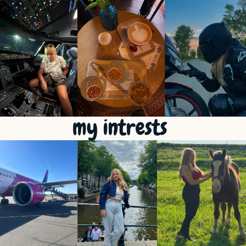

Hello! My name is Annabella Pitas, I am 19 years old and come from a small town in Romania called Chisineu-Cris. In April, I visited HZ during the open days, and before that I chatted with a student via HZ, which gave me valuable insight into the program. After completing my studies, I would like to become a software engineer and live a happy and content life. My main hobby is traveling, because I believe that experiencing other cultures helps shape who we are—you can learn something new from everyone. Getting out of my comfort zone and exchanging thoughts and experiences with people from around the world has been an important part of my personal growth.
Beyond traveling, I also enjoy spending time (and money on overpriced coffee) with friends. I love animals, and in my free time I enjoy riding my motorcycle. These hobbies allow me to relax, stay creative, and bring balance to my daily life. They also connect me with people who share similar passions, which I find inspiring and motivating.
